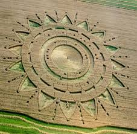

《探索生命的组合》
（三）乾隆皇上六下江南，六次从南京的龙潭行三十华里的石板块山路，六次登上了镇江所辖的句容县的宝华山。他去干什么？他可是九五之尊一国之主啊。他是去看一位和尚……这个和尚是宝华山隆昌寺的住持，其法号叫见月。
今天若登上隆昌寺的观音铜殿，远远望去，对面山坡上正对着一座碑墓，石碑上刻着见月。
这位住持为什么自号为见月？他是向弟子及众僧尼暗示他已修行至见月了。同时他也向后来的修行者启示，当他们登上观音铜殿时，应了知佛门修行的必由之路是必须要见月。遗憾的是他仅仅修行至见月就入土为安了，而未能亲见如来。
有本古书叫《指月录》，上面记载的是中国古代得道高僧的修行成就。这个成就是什么？就是他们都见月了。若再往前修至一轮明晃晃的火红的大日，并能通畅交往虚空能量组织乃至生命的最高形式，亦是生命的最原始形式生命原图，那就明了，亦即就达到了所谓的真如妙境。但即便是这样，其依然是人，因为他还没有一走了之。还没能视死如归的甩甩手，无事有。说声走，头一扭，亦即浧槃。通过浧槃使生命升华，到那空不空处去。所谓的空不空处，亦即虚空。若从虚空升华至觉海，那就是以后的事啦，我们这里暂且不研讨这个话题，这属于后话。
虚空中存在的生命能量组织，其信息是互通的，尤如一个宇宙全息的因特网。但是人与这个因特网互联难度是极大的，若能在其网上通畅无阻难度就更大了，此即是佛门所谓的五眼六神通。
人类具有与虚空原性沟通的尚待开发的天然本能。如何开发这个人类意识的潜能呢？我在另一篇文章《漫话意识的潜能》和《真实的虚幻——生命原图》中已专题进行了初步的探讨，有兴趣的读者可登录网易博客或搜狐社区文学天地的灵异空间查询。
时空观念造就了人，使其看任何事物都有视角和立点。就是电视台的所谓的大视角，也是有视角。报刊中最中性的报导也还是有立点。这是因为只要是人，就有视角和立点。有视角有立点就有分别，就能分别出不同的相，不同的人和事，就能分别出我你他，就能分别爱恨情仇，喜乐哀怒……但是有分别就不能做菩萨，当然就更不能作佛。
必须是无依无倚，找不到立点，找不到视角，大智若愚的呆若木鸡。
正如古经曰：
有我相人相众生相寿者相，不为菩萨。
无我相人相众生相寿者相，是为菩萨。
﹡ ﹡ ﹡
人类这个物种的特点就是有立点有是非的，即使以后成为佛菩萨的人，在他为人时亦是有立点有是非的。怎样才能无立点无是非呢？死了大概就无了，但死了也未必就能成为佛菩萨。比如有人含恨而死，有人含冤而死，有人不愿意死而死，有人轻生而死……如何个死法呢？唐朝古僧大颠说：须是大死一回方可了得！什么叫大死一回？
传说中的七龙女彩凤曰：呼君欲眠月儿低，几经辛苦不成泣。问君忧怯什么事，几经风雨无是非。 方知须是几经辛苦，几经风雨，真是作菩萨难啊，作佛更难。
昨晚看了央视一套的感动中国，其中那位哑女又是几经辛苦几经风雨，成就了千手观音……只有神与艺术的结合，才有可能塑造出永恒的的魅力。因为神是永恒的，就像千手观音。
现抄录一首鲜为人知的千手观音吟的曲词：
沧浪涛涛，金天碧海更从容。
问大地，平地狼烟几回风？
管天地，三重金爵更崇洋。
漫天伏地，景上添花又一人。

| 上 一 頁 | 下 一 頁 | 回 主 頁 |